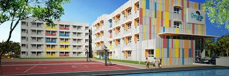
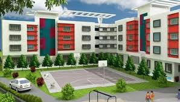
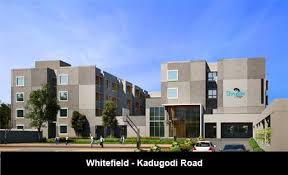
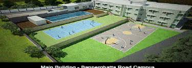

chrysalis high has 5 branches around bangalore they have many facilities
Chrysalis High, Marathahalli Sarjapur Road is located at Varthur on the main road. Spread over 3 acres/1.25 lakh square feet, and surrounded by greenery, the campus has a semi-Olympic size swimming pool, 100 meter skating rink, basketball court, and football ground.
Chrysalis High, Yelahanka New Town is spread over 2 acres and is equipped with a semi-Olympic size swimming pool, skating rink, basketball court, cricket pitch and a play area for pre-primary children.
Chrysalis High, Whitefield Kadugodi Road, is spread across 4 acres and has facilities like athletic track, football ground, a semi-Olympic size swimming pool, basketball court, tennis court, cricket pitch and a play area for pre-primary children.
Chrysalis High Bannerghatta Road is located just off the main road and is covered by greenery all around. Spread across 2.5 acres (1.1 lakh sq. ft.), the campus has a semi-Olympic size swimming pool, skating rink, basketball court, amphitheatre, and a play area for pre-primary children.
